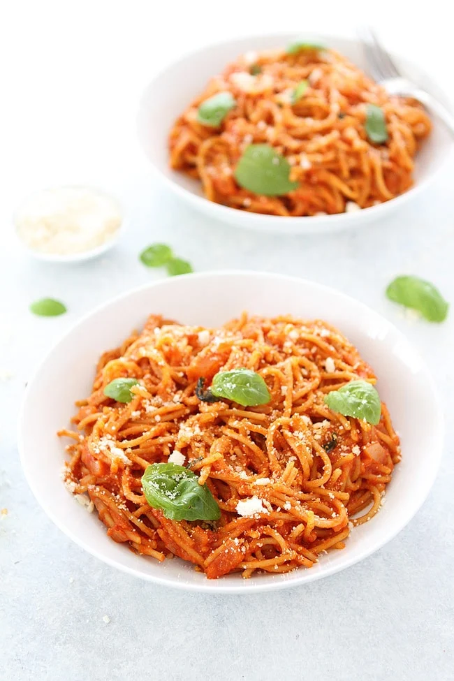

Spaghetti Pomodoro

Description
Spaghetti Pomodoro is a simple pasta dish with a delicious tomato sauce, fresh basil and parmesan cheese.
Ingredients
- Olive Oil
- Onion
- Tomatoes
- Basil
- Sugar
- Salt
- Spaghetti
- Parmesan
Steps
- Soften the Onions in a pan with Olive Oil.
- Add the Tomatoes and season with Salt.
- Once the Tomatoes have softened and created a sauce, add the Basil.
- Bring a pan of salted water to a boil. Cook the spaghetti until al dente, according to package instructions. Leave 1/2 cup of the pasta water and then drain the pasta.
- Mix the pasta and the tomato sauce together, add in the cup of hot pasta water and stir
- Plate up and garnish with basil and parmesan cheese.
Back